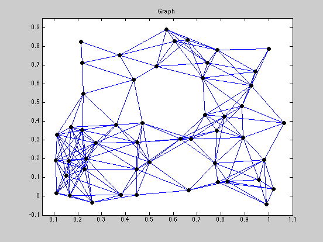
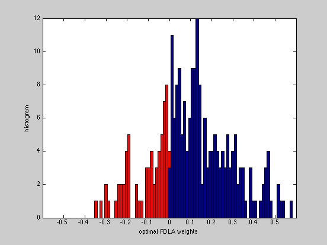
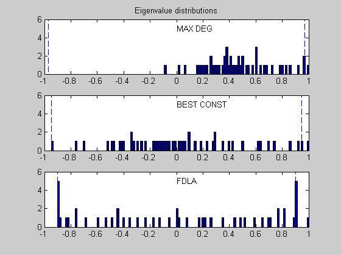
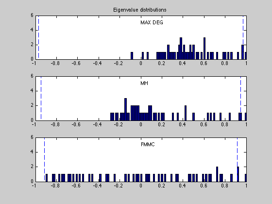
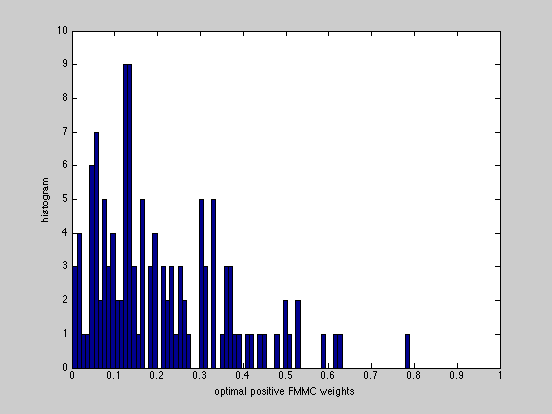
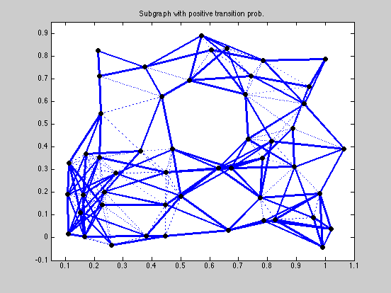

FDLA and FMMC solutions for a 50-node, 200-edge graph
n = 50; threshold = 0.2529;
rand('state',209);
xy = rand(n,2);
angle = 10*pi/180;
Rotate = [ cos(angle) sin(angle); -sin(angle) cos(angle) ];
xy = (Rotate*xy')';
Dist = zeros(n,n);
for i=1:(n-1);
for j=i+1:n;
Dist(i,j) = norm( xy(i,:) - xy(j,:) );
end;
end;
Dist = Dist + Dist';
Ad = Dist < threshold;
Ad = Ad - eye(n);
m = sum(sum(Ad))/2;
A = zeros(n,m);
l = 0;
for i=1:(n-1);
for j=i+1:n;
if Ad(i,j)>0.5
l = l + 1;
A(i,l) = 1;
A(j,l) = -1;
end;
end;
end;
A = sparse(A);
fprintf(1,'WARNING: The optimal weight computations take some time...\n');
[n,m] = size(A);
[ w_fdla, rho_fdla ] = fdla(A);
[ w_fmmc, rho_fmmc ] = fmmc(A);
[ w_md, rho_md ] = max_deg(A);
[ w_bc, rho_bc ] = best_const(A);
[ w_mh, rho_mh ] = mh(A);
tau_fdla = 1/log(1/rho_fdla);
tau_fmmc = 1/log(1/rho_fmmc);
tau_md = 1/log(1/rho_md);
tau_bc = 1/log(1/rho_bc);
tau_mh = 1/log(1/rho_mh);
eig_opt = sort(eig(eye(n) - A * diag(w_fdla) * A'));
eig_fmmc = sort(eig(eye(n) - A * diag(w_fmmc) * A'));
eig_mh = sort(eig(eye(n) - A * diag(w_mh) * A'));
eig_md = sort(eig(eye(n) - A * diag(w_md) * A'));
eig_bc = sort(eig(eye(n) - A * diag(w_bc) * A'));
fprintf(1,'\nResults:\n');
fprintf(1,'FDLA weights:\t\t rho = %5.4f \t tau = %5.4f\n',rho_fdla,tau_fdla);
fprintf(1,'FMMC weights:\t\t rho = %5.4f \t tau = %5.4f\n',rho_fmmc,tau_fmmc);
fprintf(1,'M-H weights:\t\t rho = %5.4f \t tau = %5.4f\n',rho_mh,tau_mh);
fprintf(1,'MAX_DEG weights:\t rho = %5.4f \t tau = %5.4f\n',rho_md,tau_md);
fprintf(1,'BEST_CONST weights:\t rho = %5.4f \t tau = %5.4f\n',rho_bc,tau_bc);
figure(1), clf
gplot(Ad,xy);
hold on;
plot(xy(:,1), xy(:,2), 'ko','LineWidth',4, 'MarkerSize',4);
axis([0.05 1.1 -0.1 0.95]);
title('Graph')
hold off;
figure(2), clf
v_fdla = [w_fdla; diag(eye(n) - A*diag(w_fdla)*A')];
[ifdla, jfdla, neg_fdla] = find( v_fdla.*(v_fdla < -0.001 ) );
v_fdla(ifdla) = [];
wbins = [-0.6:0.012:0.6];
hist(neg_fdla,wbins); hold on,
h = findobj(gca,'Type','patch');
set(h,'FaceColor','r')
hist(v_fdla,wbins); hold off,
axis([-0.6 0.6 0 12]);
xlabel('optimal FDLA weights');
ylabel('histogram');
figure(3), clf
xbins = (-1:0.015:1)';
ymax = 6;
subplot(3,1,1)
hist(eig_md, xbins); hold on;
max_md = max(abs(eig_md(1:n-1)));
plot([-max_md -max_md],[0 ymax], 'b--');
plot([ max_md max_md],[0 ymax], 'b--');
axis([-1 1 0 ymax]);
text(0,5,'MAX DEG');
title('Eigenvalue distributions')
subplot(3,1,2)
hist(eig_bc, xbins); hold on;
max_opt = max(abs(eig_bc(1:n-1)));
plot([-max_opt -max_opt],[0 ymax], 'b--');
plot([ max_opt max_opt],[0 ymax], 'b--');
axis([-1 1 0 ymax]);
text(0,5,'BEST CONST');
subplot(3,1,3)
hist(eig_opt, xbins); hold on;
max_opt = max(abs(eig_opt(1:n-1)));
plot([-max_opt -max_opt],[0 ymax], 'b--');
plot([ max_opt max_opt],[0 ymax], 'b--');
axis([-1 1 0 ymax]);
text(0,5,'FDLA');
figure(4), clf
xbins = (-1:0.015:1)';
ymax = 6;
subplot(3,1,1)
hist(eig_md, xbins); hold on;
max_md = max(abs(eig_md(1:n-1)));
plot([-max_md -max_md],[0 ymax], 'b--');
plot([ max_md max_md],[0 ymax], 'b--');
axis([-1 1 0 ymax]);
text(0,5,'MAX DEG');
title('Eigenvalue distributions')
subplot(3,1,2)
hist(eig_mh, xbins); hold on;
max_opt = max(abs(eig_mh(1:n-1)));
plot([-max_opt -max_opt],[0 ymax], 'b--');
plot([ max_opt max_opt],[0 ymax], 'b--');
axis([-1 1 0 ymax]);
text(0,5,'MH');
subplot(3,1,3)
hist(eig_fmmc, xbins); hold on;
max_opt = max(abs(eig_fmmc(1:n-1)));
plot([-max_opt -max_opt],[0 ymax], 'b--');
plot([ max_opt max_opt],[0 ymax], 'b--');
axis([-1 1 0 ymax]);
text(0,5,'FMMC');
figure(5), clf
v_fmmc = [w_fmmc; diag(eye(n) - A*diag(w_fmmc)*A')];
[ifmmc, jfmmc, nonzero_fmmc] = find( v_fmmc.*(v_fmmc > 0.001 ) );
hist(nonzero_fmmc,80);
axis([0 1 0 10]);
xlabel('optimal positive FMMC weights');
ylabel('histogram');
figure(6), clf
An = abs(A*diag(w_fmmc)*A');
An = (An - diag(diag(An))) > 0.0001;
gplot(An,xy,'b-'); hold on;
h = findobj(gca,'Type','line');
set(h,'LineWidth',2.5)
gplot(Ad,xy,'b:');
plot(xy(:,1), xy(:,2), 'ko','LineWidth',4, 'MarkerSize',4);
axis([0.05 1.1 -0.1 0.95]);
title('Subgraph with positive transition prob.')
hold off;
WARNING: The optimal weight computations take some time...
Calling SeDuMi: 2551 variables (1 free), 2350 equality constraints
------------------------------------------------------------------------
SeDuMi 1.1R3 by AdvOL, 2006 and Jos F. Sturm, 1998-2003.
Alg = 2: xz-corrector, Adaptive Step-Differentiation, theta = 0.250, beta = 0.500
eqs m = 2350, order n = 103, dim = 5003, blocks = 4
nnz(A) = 3101 + 0, nnz(ADA) = 3318750, nnz(L) = 1660550
it : b*y gap delta rate t/tP* t/tD* feas cg cg prec
0 : 2.87E-001 0.000
1 : 3.64E+000 2.33E-002 0.000 0.0811 0.9900 0.9900 -0.22 1 1 8.7E-001
2 : 1.14E+000 9.30E-003 0.000 0.4000 0.9000 0.9000 3.02 1 1 1.5E-001
3 : 9.45E-001 3.46E-003 0.000 0.3720 0.9000 0.9000 1.92 1 1 4.2E-002
4 : 9.28E-001 1.02E-003 0.000 0.2950 0.9000 0.9000 1.10 1 1 1.2E-002
5 : 9.09E-001 3.28E-004 0.000 0.3211 0.9000 0.9000 1.06 1 1 3.9E-003
6 : 9.04E-001 1.04E-004 0.000 0.3172 0.9000 0.9000 1.02 1 1 1.3E-003
7 : 9.03E-001 2.47E-005 0.000 0.2375 0.9028 0.9000 1.00 1 1 3.4E-004
8 : 9.02E-001 4.19E-006 0.000 0.1698 0.9080 0.9000 1.00 1 1 9.1E-005
9 : 9.02E-001 5.23E-007 0.000 0.1247 0.9185 0.9000 1.00 1 1 2.2E-005
10 : 9.02E-001 1.08E-007 0.000 0.2057 0.9149 0.9000 1.00 1 1 5.4E-006
11 : 9.02E-001 2.43E-008 0.000 0.2258 0.9046 0.9000 1.00 1 1 1.2E-006
12 : 9.02E-001 5.13E-009 0.000 0.2112 0.9056 0.9000 1.00 1 1 2.7E-007
13 : 9.02E-001 1.39E-009 0.000 0.2719 0.9053 0.9000 1.00 1 1 7.4E-008
14 : 9.02E-001 3.18E-010 0.000 0.2278 0.9026 0.9000 1.00 1 1 1.7E-008
15 : 9.02E-001 6.55E-011 0.000 0.2061 0.9000 0.9034 1.00 1 1 3.5E-009
iter seconds digits c*x b*y
15 103.6 Inf 9.0207867736e-001 9.0207869226e-001
|Ax-b| = 3.7e-009, [Ay-c]_+ = 1.5E-009, |x|= 1.1e+001, |y|= 1.2e+000
Detailed timing (sec)
Pre IPM Post
2.714E+000 1.036E+002 0.000E+000
Max-norms: ||b||=9.400000e-001, ||c|| = 1,
Cholesky |add|=0, |skip| = 0, ||L.L|| = 53.9154.
------------------------------------------------------------------------
Status: Solved
Optimal value (cvx_optval): +0.902079
Calling SeDuMi: 2801 variables (1 free), 2600 equality constraints
------------------------------------------------------------------------
SeDuMi 1.1R3 by AdvOL, 2006 and Jos F. Sturm, 1998-2003.
Alg = 2: xz-corrector, Adaptive Step-Differentiation, theta = 0.250, beta = 0.500
eqs m = 2600, order n = 353, dim = 5253, blocks = 4
nnz(A) = 3602 + 0, nnz(ADA) = 3258916, nnz(L) = 1698319
it : b*y gap delta rate t/tP* t/tD* feas cg cg prec
0 : 1.01E+000 0.000
1 : 1.17E+000 6.65E-001 0.000 0.6565 0.9000 0.9000 5.69 1 1 8.2E+000
2 : 1.08E+000 3.36E-001 0.000 0.5050 0.9000 0.9000 1.55 1 1 4.0E+000
3 : 9.34E-001 9.61E-002 0.000 0.2861 0.9000 0.9000 1.81 1 1 7.6E-001
4 : 9.53E-001 2.03E-002 0.000 0.2112 0.9000 0.9000 1.48 1 1 1.3E-001
5 : 9.39E-001 5.10E-003 0.000 0.2512 0.9000 0.9000 1.12 1 1 3.1E-002
6 : 9.29E-001 2.63E-003 0.000 0.5149 0.9000 0.9000 1.06 1 1 1.6E-002
7 : 9.24E-001 1.48E-003 0.000 0.5649 0.9000 0.9000 1.04 1 1 8.9E-003
8 : 9.24E-001 4.68E-004 0.382 0.3158 0.9000 0.0000 1.03 1 1 5.4E-003
9 : 9.22E-001 2.14E-005 0.010 0.0458 0.9479 0.9000 1.02 1 1 8.4E-004
10 : 9.18E-001 8.71E-006 0.000 0.4065 0.9000 0.9072 1.01 1 1 3.2E-004
11 : 9.17E-001 3.35E-006 0.000 0.3848 0.9256 0.9000 1.01 1 1 1.4E-004
12 : 9.16E-001 1.18E-006 0.000 0.3518 0.9469 0.9000 1.01 1 1 6.3E-005
13 : 9.16E-001 5.55E-007 0.000 0.4703 0.9271 0.9000 1.00 1 1 3.1E-005
14 : 9.16E-001 2.41E-007 0.000 0.4336 0.9237 0.9000 1.00 1 1 1.4E-005
15 : 9.15E-001 9.17E-008 0.000 0.3812 0.9164 0.9000 1.00 1 1 5.1E-006
16 : 9.15E-001 2.34E-008 0.000 0.2555 0.4806 0.9000 1.00 1 1 1.4E-006
17 : 9.15E-001 4.28E-009 0.000 0.1826 0.9000 0.8550 1.00 1 1 2.8E-007
18 : 9.15E-001 1.03E-009 0.000 0.2417 0.9000 0.9000 1.00 1 1 6.9E-008
19 : 9.15E-001 8.57E-011 0.054 0.0829 0.9900 0.9900 1.00 2 2 5.7E-009
iter seconds digits c*x b*y
19 127.9 Inf 9.1515168432e-001 9.1515168538e-001
|Ax-b| = 5.1e-009, [Ay-c]_+ = 2.7E-009, |x|= 1.1e+001, |y|= 1.3e+000
Detailed timing (sec)
Pre IPM Post
3.555E+000 1.279E+002 1.001E-002
Max-norms: ||b||=1, ||c|| = 1,
Cholesky |add|=0, |skip| = 0, ||L.L|| = 35.8724.
------------------------------------------------------------------------
Status: Solved
Optimal value (cvx_optval): +0.915152
Results:
FDLA weights: rho = 0.9021 tau = 9.7037
FMMC weights: rho = 0.9152 tau = 11.2783
M-H weights: rho = 0.9489 tau = 19.0839
MAX_DEG weights: rho = 0.9706 tau = 33.5236
BEST_CONST weights: rho = 0.9470 tau = 18.3549
     